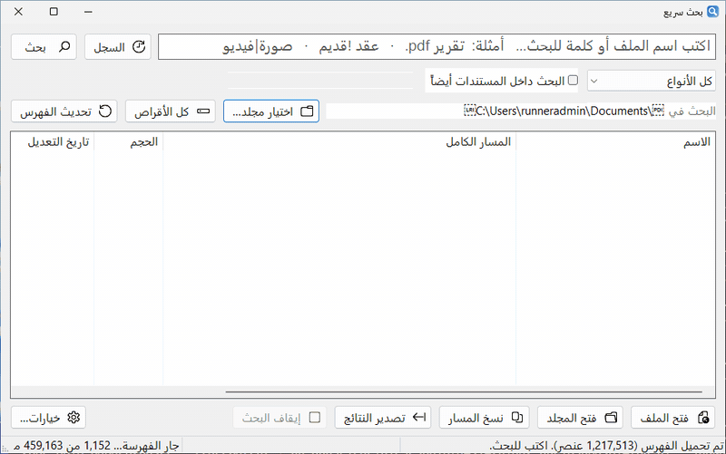
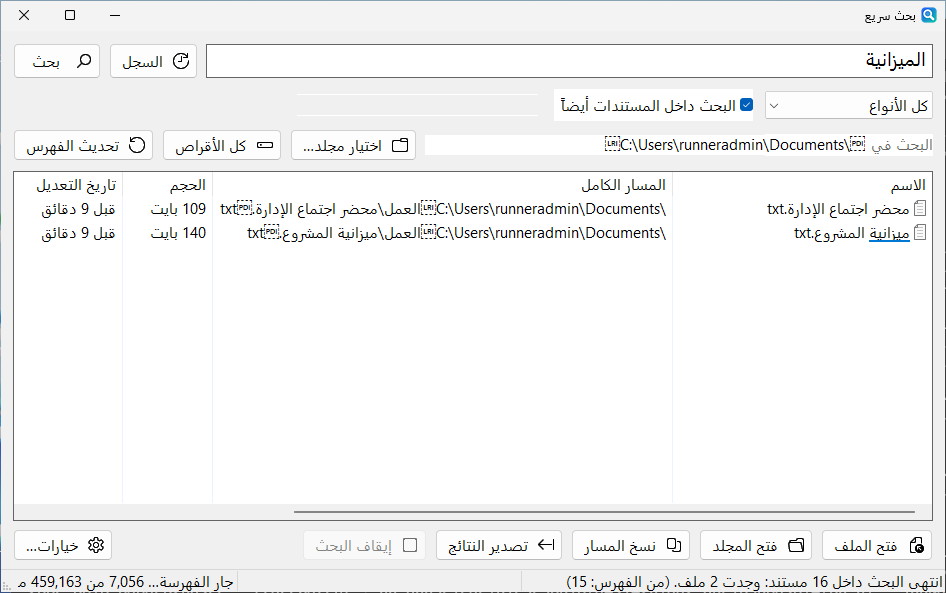

نتائج فورية بالاسم
في كل الأقراص أو في مجلد تختاره، مع فلاتر جاهزة: مستندات، صور، صوت، فيديو، مضغوطات، برامج، مجلدات. والملفات الأكثر فتحاً تظهر أولاً.
مجاني · لويندوز
أسرع طريقة لإيجاد أي ملف على ويندوز، وحتى داخل المستندات. يفهرس كل أقراصك مرة واحدة ثم يُظهر النتائج أثناء الكتابة، حتى مع أكثر من مليون ملف. ويفهم العربية كما تُكتب فعلاً.
الإصدار 0.7.0 · ملف واحد bahth.exe لا يحتاج تثبيتاً · ويندوز 10 أو 11 (64 بت وARM64 و32 بت)

برنامج بحث عن الملفات لويندوز مكتوب بلغة Rust: سريع، ويبقى فهرسه محدَّثاً وحده عند إضافة الملفات أو حذفها أو إعادة تسميتها.
في كل الأقراص أو في مجلد تختاره، مع فلاتر جاهزة: مستندات، صور، صوت، فيديو، مضغوطات، برامج، مجلدات. والملفات الأكثر فتحاً تظهر أولاً.
PDF و Word و Excel و PowerPoint ورسائل البريد وكتب epub، مع مقتطف من النص المطابق. وداخل الصور والملفات المضغوطة أيضاً.
عبارة بين علامتي تنصيص، «أو» و«ليس»، نوع الملف، الحجم، تاريخ التعديل، التعبيرات المنتظمة، الكلمة كاملة، والتقارب بين كلمتين. وكل فلتر له اسم عربي مثل حجم: وتاريخ:.
Ctrl+Alt+F يُظهر البرنامج من أي مكان، وCtrl+Alt+G في نافذة «حفظ» أو «فتح» بأي برنامج ينقلها إلى مجلد النتيجة التي تختارها.
كشف الملفات المكررة، أحجام المجلدات، عرض المصغرات، استبدال نص في عدة ملفات مع تراجع، تصدير النتائج إلى CSV، وسحب النتيجة وإفلاتها في واتساب أو البريد.
تتبع لغة ويندوز، وتُغيَّر في أي وقت من «خيارات ← Language / اللغة». ويعمل مع ويندوز في الخلفية، ويتحدّث تلقائياً بنقرة.
لا فرق بين أ إ آ ا، ولا ة ه، ولا ى ي. يتجاهل التشكيل والتطويل و«ال»، ويقبل الأرقام العربية (٠١٢٣) والحروف الفارسية. وإن لم يجد شيئاً جرّب وحده لوحة المفاتيح الأخرى، ثم الفرانكو، ثم الكلمات القريبة إملائياً.
فعّل «البحث داخل المستندات أيضاً» ثم اضغط Enter، فيظهر كل ملف يحتوي ما تبحث عنه مع مقتطف من النص المطابق. فلاتر الحجم والتاريخ تعمل هنا أيضاً.

كل إصدار يُشغَّل فعلياً على ويندوز قبل نشره: يفهرس القرص كله ويبحث بالعربية، ولا يُنشر إن ظهر أي خطأ.
| البحث عن | InstaFind | dir /s | Get-ChildItem |
|---|---|---|---|
report | 1 ثانية | 73 إلى 108 ثوانٍ | 29 إلى 51 ثانية |
احمد (الملفات اسمها «أحمد») | 1 ثانية، وجد الملفين | 19 إلى 33 ثانية، لم يجد شيئاً | 29 إلى 50 ثانية، لم يجد شيئاً |
الثانية تشمل تشغيل البرنامج من سطر الأوامر وقراءة الفهرس من القرص. داخل النافذة المفتوحة تظهر النتائج أثناء الكتابة في أجزاء من الثانية. النتائج الخام
البحث في InstaFind يعمل دون إنترنت. ملفاتك وفهرسها على جهازك فقط، ولا شيء منها يُرفع إلى أي مكان.
%LOCALAPPDATA%\BahthSari\ وتُحذف متى شئت.اختر الطريقة التي تناسبك. الإصدار الحالي 0.7.0.
ملف واحد لا يحتاج تثبيتاً. ضعه في مجلد دائم، مثلاً %LOCALAPPDATA%\Programs\Bahth\، ثم شغّله.
للأجهزة العادية (64 بت). أجهزة أخرى: ARM64 (مثل Snapdragon) · 32 بت
إن كنت تستخدم مدير الحزم Scoop:
scoop bucket add instafind https://github.com/sarmadiq9090-coder/arabic-file-search
scoop install instafindسيتوفر قريباً في مستودع winget الرسمي:
winget install InstaFindأول تشغيل يفهرس الأقراص في الخلفية (دقيقة أو أكثر حسب عدد الملفات)، وبعدها يفتح البرنامج فوراً. إن ظهر تحذير SmartScreen لأن الملف غير موقّع رقمياً: «مزيد من المعلومات» ← «تشغيل على أي حال». التحديث بعدها تلقائي.
نعم، مجاني للاستخدام على أجهزتك.
نعم. فعّل «البحث داخل المستندات أيضاً» ثم اضغط Enter. يقرأ docx و xlsx و xls و pptx و pdf و odt و ods و rtf و doc و txt و csv ورسائل البريد وكتب epub، ويصحّح العربية المعكوسة في ملفات PDF. ويقرأ الصور وملفات PDF الممسوحة ضوئياً بمحرك التعرف على النصوص في ويندوز 10 و11.
إن كنت تريد بحثاً فورياً بالاسم في كل الأقراص مثل Everything، مع فهم حقيقي للعربية (الهمزات والتاء المربوطة والتشكيل و«ال» ولوحة المفاتيح الخطأ والفرانكو) وبحث داخل المستندات، فهذا ما صُمّم له InstaFind.
لا. الفهرسة والبحث يعملان على جهازك دون إنترنت. الاتصال الوحيد هو التحقق من التحديثات على GitHub، وتنزيل أسعار صرف العملات لتحويل العملات مرة كل 12 ساعة تقريباً.
ويندوز 10 أو 11، 64 بت. البحث داخل الصور يحتاج حزمة اللغة العربية في ويندوز لقراءة النص العربي.
لأن الملف غير موقّع رقمياً. اضغط «مزيد من المعلومات» ثم «تشغيل على أي حال». يمكنك تنزيل البرنامج من صفحة الإصدارات على GitHub.
أطفئ «التشغيل مع ويندوز» من «خيارات…»، ثم احذف bahth.exe والمجلد %LOCALAPPDATA%\BahthSari\.
ملف واحد بلا تثبيت، يجد أي ملف أثناء الكتابة.